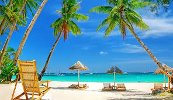
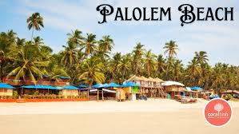
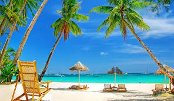
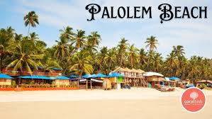

Baga & Calangute Beaches
Lively beaches with water sports, shacks and nightlife.
Goa offers a mix of beaches, forts, churches, water sports, nightlife, local seafood and colourful markets. North Goa is energetic with clubs and busy beaches. South Goa is calmer with cleaner, quieter stretches.
It is one of India’s most flexible destinations—good for parties, honeymoons, peaceful breaks or family trips.
Lively beaches with water sports, shacks and nightlife.
Seaside fort with panoramic views of the Arabian Sea.
UNESCO churches including Basilica of Bom Jesus & Se Cathedral.
Calm, scenic beach ideal for relaxing in South Goa.
Goa’s most active stretch with shacks, water sports and nightlife.
Historic fort plus clean beach views below.
UNESCO churches with Indo-Portuguese architecture.
Choose North, South or both.
Quick trip
Balanced
5–6 days
Best for nightlife, activities and restaurants.
Ideal for groups and young travellers.
Calm, scenic beaches for relaxation.
Great for couples and families.
Central access to Old Goa, casinos and Miramar beach.
Good balanced option.

 




Transport, food and beach habits.